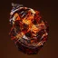
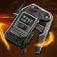

治愈
触发瞬间恢复生命值（内置触发冷却 1 秒）：
每层治愈在 0.1 秒内恢复 60 [30] 生命值。
触发瞬间恢复生命值（内置触发冷却 1 秒）：
每层治愈在 0.1 秒内恢复 60 [30] 生命值。
烈日元素拾取物，生成后在场上停留 25 秒（生成冷却 5 秒）。
拾取时：
提供 11.25% 手雷技能能量。
盟友无法拾取自己生成的焰灵。
获得武器伤害加成，持续 10 秒（上限 15 秒，超能「黄金枪」同样享受此加成）：
武器伤害提高 20% [10%]；对勇士提高至 30%（超能「光焰之井」的 25% 加成会覆盖此 30% 勇士增伤）。
重新获得焕光时，刷新持续时间至此前达到过的最大值。
重新获得恢复时，保留最高层数并刷新至此前达到的最长持续时间（若新来源更长则取更长者）。
碎片「至高天余烬」与「慈悲余烬」提供延时效果，不计为重新施加；超出 15 秒部分会被截断至上限。
在 8 米半径内引发猛烈爆炸：
造成 676 [120 守护者 ｜ 250 构造体] 烈日伤害（PvE 无距离衰减，PvP 存在距离衰减）。
引爆会清空目标身上的全部灼烧层数，并在 1.6 秒内无法再次施加灼烧。
伤害继承机制：
若最初施加灼烧的技能带有伤害加成，点燃伤害同样按比例提升（例如异域防具「真理之容」5 层 + 融合手雷使点燃伤害提高 100%）。
近战伤害增益不提升点燃与灼烧伤害。
势不可挡勇士承受点燃伤害时触发眩晕。
被灼烧的敌方目标在 0.5 秒后开始受到持续伤害，此后每 0.56 秒造成一次伤害（第 2 次有 0.93 秒延迟）。
层数累计达到 100 层时清空层数并触发点燃。
PvP 中灼烧伤害不致死。
堆叠至 60 层以上时单跳伤害额外 +2.5%（UI 显示为黄色暴击数字）。
层数衰减机制：
持续时间与衰减速率随难度动态调整。
PvP 中持续 2.3 秒后开始衰减，每 0.04 秒衰减 1 层（约 25 层/秒）。
灼烧与点燃的伤害可受武器 Perk 与异域防具加成，其伤害属性由最初施加灼烧的伤害源决定：
由武器施加（Perk「辉耀炽热」、Perk「燃烧野心」，或「汤米的火柴盒」、「条件终局」等异域武器）：
计为武器伤害，享受武器伤害增益与仅针对武器的活动修正加成（例如其他增伤 Perk、焕光、防具模组「烈日武器激涌」）。
由于新装备系统常驻加成，对战斗人员造成的灼烧与点燃伤害在战斗人员阶级倍率基础上始终额外高 5%。
由技能施加（手雷「融合手雷」、超能「光焰之井」等）：
计为烈日技能伤害，仅分别享受手雷（如异域防具「真理之容」）与超能加成。
近战伤害增益及超过 100 点的近战属性均不提升其伤害。
施加的灼烧层数提高 50%（向上取整）：
基准 3 层增至 5 层，40 层增至 60 层。受本碎片影响的来源会在常规层数旁注明额外增量（例如 40+20）。
部分特殊来源不遵循 50% 加成规则：卡利班之手 60+0、汤米的火柴盒 15+5、焚天者誓约 5+5。
烈日超能弹体的追踪性能显著增强。
目前仅对超能「利刃弹幕」飞刀、超能「黎明」弹体与超能「烈焰之歌」衍生火苗生效。
为盟友赋予治愈、焕光、恢复或完成复活时：
手雷、近战与职业技能基础充能速度额外 +300%，持续 7 [4] 秒。
可触发来源：
超能「光焰之井」｜ 治愈裂痕 ｜ 「流明」与「汇编器战靴」的尊贵追踪弹 ｜ 「朱雀意图之刃」追踪弹 ｜ 「珍贵伤痕」击杀 ｜ 烈日支援框架自动步枪的恢复弹幕。
异域防具「汇编器战靴」的强能与光焰之井追踪弹可直接由自己触发本碎片。
无法触发：强能裂痕、阿尔法·鲁皮之脊的治疗脉冲、蛾守护者的覆盖护盾飞蛾、非烈日支援框架自动步枪、护甲模组与武器 Perk、4 件套装主动治疗。
点燃引爆对波及的敌方目标施加 40（碎片「骨灰余烬」+20）层灼烧。
对直接引发本次点燃的原目标不生效。
烈日超能击杀时：
触发点燃并生成一枚焰灵。
超能「光焰之井」会使自己的全部武器伤害计为超能技能伤害，因此站在自己的光焰之井内用烈日武器击杀同样计为烈日超能击杀。
点燃爆炸半径扩大 25%（从 8 米扩大至 10 米）。
拾取焰灵时：
赋予 1 层恢复，持续 2（碎片「抚慰余烬」+1）秒；已生效时则延长同等时长（上限 15 秒，超出部分截断至 15 秒）。
复活盟友时：
为自己与 ? 米内的盟友赋予 1 层恢复，持续 5（碎片「抚慰余烬」+2.5）秒。
手雷击杀时：
为自己赋予 1 层治愈。
对未受灼烧影响的敌方目标施加灼烧时：
职业技能基础充能速度额外 +400%，持续 3 秒。
目标若直接死于该次攻击则无法触发。
施加给自己的恢复与焕光持续时间延长 50%：
各技能说明中以「+数值」注明装备本碎片时的额外时长加成（如 10+5 秒焕光、4+2 秒恢复）。
烈日武器击杀时：
为自己与 15 米内的盟友赋予 1 层「回火余烬」，持续 8 秒，最多叠加 3 层。
「回火余烬」加成：
提供 +20 空中效率；激活期间烈日武器击杀生成一枚焰灵。
按层数提供 +20 ｜ +40 ｜ +60 生命值属性。
充能近战命中时：
为自己与 8 米内的盟友赋予焕光，持续 8（碎片「抚慰余烬」+4）秒。
用点燃在 ? 秒内击杀 2 名敌方目标时：
生成一枚能量球（提供 2.5% 超能能量，内置冷却 10 秒）。
重型弹道 ｜ 扫描
接触表面时扫描 8.5 米视线内最多 4 名敌方目标，1 秒后发射烈日光能矢弹。
每发矢弹造成 337 [65] 伤害并施加 20（碎片「骨灰余烬」+10）层灼烧。
扫描范围扩大 50% 至 12 米，锁定目标上限提高至 5 名敌方目标。
轻型弹道 ｜ 轻微追踪 ｜ 粘附
附着至表面或敌方目标，短暂延迟后引爆。
爆炸在 6 米内造成最高 738 [130] 伤害，并施加 40（碎片「骨灰余烬」+20）层灼烧。
初次引爆 0.5 秒后在原位引发第二次爆炸：
在 8 米内造成最高 851 [50] 伤害；两次爆炸合计最高 1589 [180] 伤害，同样施加 40（碎片「骨灰余烬」+20）层灼烧。
超轻型弹道 ｜ 强盟友追踪
接触表面时为 7.5 米内的自己与盟友赋予 1 层治愈，并留下持续 7.5 秒的恢复球。
恢复球（拥有 100 生命值）：
在 7.5 米内拾取时，赋予 1 层恢复，持续 4（碎片「抚慰余烬」+2）秒。
接触时赋予的治愈提高至 2 层。
恢复球赋予的恢复提高至 2 层，持续 4（碎片「抚慰余烬」+2）秒。
中型弹道
弹体减速后经短暂延迟引爆。
爆炸在 8 米内造成最高 814 [130] 伤害，并施加 60（碎片「骨灰余烬」+30）层灼烧。
若敌方目标处于手雷 1 米核心范围内，伤害提升 31.5% 至最高 1202 [173]。
中型弹道 ｜ 持续伤害场域
接触表面时在 5 米内造成最高 63 [20] 伤害，并施加 17（碎片「骨灰余烬」+4.5） [10（+10）] 层灼烧，同时生成一处持续 4 秒的烈日耀斑。
烈日耀斑（半径 4 米）：
生成 1 秒后开始造成伤害，随后每 0.267 秒造成 78 [25] 伤害，共 13 跳，累计造成最高 1014 [325] 伤害。
持续时间延长至 6 秒。
耀斑周围每隔 ? 秒向外喷射熔岩弹球，每颗造成 125 [50] 伤害（无距离衰减）。
中型弹道 ｜ 追踪器
接触表面时释放 9 枚追踪无人机。
无人机追逐 7 米内的敌方目标，触碰即爆；未寻得目标时 10–11 秒后自爆。
每枚造成 58 + 54 [8 + 8] 伤害，并施加 5（碎片「骨灰余烬」+3）层灼烧。
9 枚全中累计造成最高 1008 [144] 伤害，并施加 45（碎片「骨灰余烬」+27）层灼烧。
中型弹道
接触表面时向前释放一道烈日波形，随后每 1.45 秒追加一道，基础最多释放 3 道。
装备碎片「量级火花」时追加第 4 道。
每道波形向前推进最远 20 米，造成最高 246 + 206 [80 + 50] 伤害，并施加 10（碎片「骨灰余烬」+10）层灼烧。
4 道全部命中累计造成最高 1808 [360] 伤害，并施加 40（碎片「骨灰余烬」+40）层灼烧。
中型弹道 ｜ 壁挂 ｜ 粘附
附着至表面后每隔 ? 秒投射激光扫描；若直接粘附在目标身上则立即触发。
探测到进入扫描锥（长 10 米、底半径 7 米）内的敌方目标或附着满 10 秒后触发引爆流程。
触发 1 秒后（或被提前摧毁时）在 ? 米内引爆：
造成最高 805 [140] 伤害，并施加 40（碎片「骨灰余烬」+20）层灼烧。
施展空中回旋翻腾闪避动作：
落地时：
为自己与 10 米内的盟友赋予焕光，持续 10（碎片「抚慰余烬」+5）秒。
对 6.5 米内的敌方目标造成最高 40 [20] 烈日伤害。
扇形掷出 3 把烈日飞刀：
每把飞刀造成 257 [38] 伤害（精准倍率 1.3×），并施加 20（碎片「骨灰余烬」+10）层灼烧。
3 把全部精准命中累计造成最高 1002 [147] 伤害，并施加 60（碎片「骨灰余烬」+30）层灼烧。
固有拥有 2 次技能充能。
快速掷出一柄以 40 米/秒高速飞行的轻质飞刀：
命中造成 408 [100] 伤害（精准倍率 1.5×）。
精准命中时为自己赋予焕光，持续 10 秒。
快速投出一柄可附着于表面的爆炸飞刀（表面附着最长 14 秒）：
探测到 5 米内的敌方目标或直接命中目标时立即引爆。
直击造成 306 [20] 伤害（精准倍率 1.3×）。
引爆在 6 米内造成最高 405 [100] 爆炸伤害。
掷出一柄重型加重飞刀（掷出前需蓄势 0.65 秒，施法动画总计 1.55 秒）：
命中造成 571 [140] 伤害（精准倍率 1.5×）。
精准击杀时返还一次职业技能充能。
命中已受灼烧的敌方目标时直接触发点燃。
伤害抗性：90%? [49%]
分两轮投出追踪飞刀（基础每轮 7 把共 14 把；装备星相「击败他们」时每轮 10 把共 20 把）：
单刀嵌入目标造成 99 [没多少?] 伤害，0.5 秒后引爆。
每把引爆在 4.25 米内造成最高 560 [基本团灭?] 伤害，并施加 ?（碎片「骨灰余烬」+?）层灼烧。
全中引爆合计最高 8512 [死] 伤害；装备星相「击败他们」最高达 12160 [死 ×1.43]。
伤害抗性：60% [0%]（装备星相「击败他们」时为 66% [15%]）｜ 基础持续：12 秒（或每秒消耗 8.34% 超能能量）
弹匣 6 发（无精准命中判定，享受焕光增伤）：
每发造成 1453 [393] 伤害，并施加 40（碎片「骨灰余烬」+10）层灼烧。
射程衰减始于 26 米，100 米处衰减至 34.5%（固定 1× 瞄准倍率，不受变焦影响）。
超能击杀时返还一发子弹并返还超能能量：
首杀返还约 80%，随后每次击杀递减约 10%，保底返还约 12%。
伤害抗性：60% [0%] ｜ 基础持续：12 秒（或每秒消耗 8.34% 超能能量；装备星相「击败他们」时为 16 秒、每秒 6.25%）
弹匣 3 发（精准倍率 2×，享受焕光增伤）：
每发造成 1574 [426] 伤害，并施加 40（碎片「骨灰余烬」+10）层灼烧。
准星悬停在 27 米内的敌方目标附近时为其标记锁定（离开视野前持续有效）。
职业技能替换为「速射神枪」（冷却时间采用射手闪身基准，触发已装备职业技能效果，支持空中施放并提供短促速度爆发）：
施放时在 1.2 秒内自动连发最多 3 枪（平均 150 发/分钟）。
每枪造成 354 [21] 伤害并施加 20（碎片「骨灰余烬」+10）层灼烧；3 枪全中为自己赋予 1 层治愈。
本星相不与异域防具「星界夜鹰」产生联动效果。
按［手雷］投掷捆绑炸药（被武器射击或投掷 3 秒后引爆，触发伤害提高 50% 的点燃）：
若在空中射中炸药引爆，伤害额外提高 50% [5%]，爆炸半径扩大 ?% 至 ? 米，并向外释放 9 枚追踪微型弹药，每枚造成最高 80 [?] 伤害。
投掷后进入 6 秒充能冷却，冷却期间击杀不计入充能进度。
焕光期间：
充能近战技能击杀在 0.2 秒延迟后返还 100% 近战技能能量（若焕光正是由该击杀触发，同样返还）。
施放超能时：
为自己赋予 1 层治愈。
层数加成效果：
每层提供 +5 武器属性，以及填装速度与换弹时长加成；叠满 10 层时合计 +50 武器属性、+? 填装速度，换弹时长 ×0.?。
叠满 10 层时消灭目标，为自己赋予 1 层恢复，持续 3（碎片「抚慰余烬」+1.5）秒。
冲刺 1.25 秒后按［近战技能］：
向前突进 6.8 米并自动锁定射程内的敌方目标。
直击造成 878 [90] 伤害，并施加 40（碎片「骨灰余烬」+20）层灼烧。
对目标身后 7 米内的敌方目标造成 586 [60] 径向溅射伤害。
若直击直接消灭目标，则立即触发点燃。
肩撞通用规则：未命中战斗人员时返还并仅消耗 15% 近战能量；开火状态下滑铲无法施放；直击命中使受击近战突进失效 0.5 秒。
快速掷出一柄烈日飞锤：
造成基础 539 [90] 伤害。
伤害随飞行距离递增（35 米以上最高 +36%，与各类加成独立相乘）：
小于 2 米 基础 ｜ 2–4 米 +6% ｜ 5–8 米 +12% ｜ 9–16 米 +18% ｜ 17–25 米 +24% ｜ 26–34 米 +30% ｜ 35 米以上 +36%。
飞锤回收机制：
可从地面拾回飞锤，立即返还 121.5% 近战技能能量；若此前命中目标，拾回时额外赋予 1 层治愈。
飞锤脱手落地满 10 秒后自爆，在周围造成最高 325 [60] 伤害（计为近战伤害）。
伤害抗性：90% [53%] ｜ 基础持续：25 秒（或每秒消耗 4% 超能能量）
轻攻击 ｜ 消耗 4% 超能能量：
旋转挥击造成 4 段各 111 [?] 伤害（挥击间隔 0.67 秒）。
连续命中提供 40% 攻击速度加成（中断连击后失效）。
累计命中 10 次生成一处烈日旋风（单次超能最多生成 1 处）。
重击 ｜ 消耗 8% 超能能量：
下砸地面并释放一枚追踪飞弹，触碰引爆造成 276 [?] 伤害并生成一处烈日旋风。
烈日旋风（持续 4 秒）：
每 0.2 秒造成 24 [16] 伤害，每 0.56 秒施加 3（碎片「骨灰余烬」+2）层灼烧。
装备星相「无敌索尔」时：
地面施放超能直接生成一处烈日耀斑。
超能被动消耗降低 40%，持续时间延长至 42 秒（每秒消耗 2.4% 超能能量）。
伤害抗性：90% [51%] ｜ 基础持续：21 秒（或每秒消耗 4.75% 超能能量）
轻攻击 ｜ 消耗 12% 超能能量（投掷间隔 1.5 秒）：
掷出接触即爆的飞锤，造成最高 445 [?] 伤害。
引爆释放 4 片破片，每片造成最高 396 [?] 伤害；飞锤滞空飞行满 0.7 秒后破片增至 5 片。
上述异域防具测算均假设无敌索尔增益 100% 持续覆盖，实战未必能全程维持。
伤害抗性：90% [51%] ｜ 基础持续：16.5 秒（或每秒消耗 6.06% 超能能量）
地面施放超能时生成一处烈日耀斑。
轻攻击 ｜ 消耗 9% 超能能量（投掷间隔 1.5 秒）：
投出飞锤造成 483 [?] 伤害，并在接触点生成一处烈日耀斑。
爆炸释放 3 片破片，每片造成最高 429 [?] 伤害。
身处耀斑中：
超能被动消耗降低 40%，持续时间延长至 27.5 秒（每秒消耗 3.63% 超能能量）。
轻攻击消耗降至 5.5% 超能能量，投掷间隔缩短至 1 秒。
滑铲时按［近战技能］：
向前释放一道 20 米的烈日波形，造成 40 [30] 伤害并施加 40（碎片「骨灰余烬」+20）层灼烧。
若未衔接第二段下砸，仅消耗 50% 近战技能能量。
腾空后再次按［近战技能］：
重重砸向地面，释放第二道更宽、推进 20 米的烈日冲击波，并碎裂沿途水晶。
对未受灼烧的敌方目标造成 486 [120] 伤害；对已受灼烧的敌方目标造成 472.5 [50] 伤害并立即触发点燃。
近战动画施法期间对非近战伤害获得 25% 伤害抗性。
开火状态下滑铲无法施放。

烈日技能击杀与点燃击杀时：
获得 1 层「咆哮烈焰」，持续 20 秒，最多叠加 3 层（再次击杀刷新持续时间）。
激活期间基础近战命中时：
施加 30（碎片「骨灰余烬」+10）层灼烧，并计为充能近战命中。

职业技能被替换为遥控引爆器（部署屏障后再次按键引爆，引发附带强力击退的爆炸）：
引爆对部分判定计为摧毁构造体；被自身的爆炸命中触发屏障加速，腾空期间可继续施展战锤打击（即使此前曾在空中开火）。
遥控引爆对多数效果计为职业技能使用，但职业属性超过 100 时不提供覆盖护盾。
放置巍峨屏障时：
屏障向前滑行最多 20 米并逐渐减速。
直击伤害提高至 328 [?] 并施加 20（碎片「骨灰余烬」+10）层灼烧（同一敌方目标内置冷却 2 秒）。
位于集结屏障后方时：
为动能与烈日武器赋予灼热子弹。
屏障激活期间被动积攒充能进度（巍峨屏障 34% ｜ 集结屏障 10%），每造成约 100 点伤害额外积攒相当于 1 秒被动充能的进度。
引爆屏障时：
在 ? 米内造成最高 550 [?] 伤害并施加 50（碎片「骨灰余烬」+25）层灼烧（对自己伤害降至 ?）。
向 40? 米内的敌方目标抛射烈日破片，每片造成 71 [?] 伤害并施加 5（碎片「骨灰余烬」+5）层灼烧。
充能进度越满爆炸伤害越高，满充能时伤害 +50%，并额外呈锥形向前释放 3 道最远 15 米的烈日波形，每道造成 141 [?] 伤害。
星相伤害随超过 100 的职业属性递增，200 属性时最高 +65% [?%]。
烈日技能击杀、击杀受灼烧的敌方目标，或烈焰战锤飞锤命中时：
在目标位置生成一处持续 ? 秒的烈日耀斑（身处耀斑内可刷新其持续时间，上限 12 秒）。
烈日耀斑：
接触耀斑赋予「无敌索尔」（持续 5 秒）与 1 层恢复（持续 5，碎片「抚慰余烬」+2.5 秒）。
耀斑每 0.167 秒造成 60 [22] 伤害，并施加 5（碎片「骨灰余烬」+3）层灼烧。
「无敌索尔」激活期间：
手雷与近战基础充能速度额外 +100%。
超能被动消耗降低 40%。
空中按［职业技能］快速俯冲下落：
落地为自己与 9 米内的盟友赋予 2 层治愈。
激活星相「炙热升腾」期间施放：
落地额外赋予 2 层恢复，持续 3（碎片「抚慰余烬」+1.5）秒。
对 6.5 米内的敌方目标造成 100 伤害，并施加 40（碎片「骨灰余烬」+20）层灼烧。
发射 3 团呈螺旋弹道前进的追踪烈日火球：
每团火球在 ? 米内造成最高 150 [35] 伤害，并施加 10（碎片「骨灰余烬」+5）层灼烧。
3 团全中累计造成最高 450 [105] 伤害，并施加 30（碎片「骨灰余烬」+15）层灼烧。
打响手指，呈扇形向前散布 5 枚燃烧火花：
每枚火花飞行 ? 米后引爆，在 ? 米内造成最高 90 [27?] 伤害，并施加 20（碎片「骨灰余烬」+10） [10（+5）] 层灼烧。
5 枚全中累计造成最高 450 [135?] 伤害，并施加 100（碎片「骨灰余烬」+50） [50（+25）] 层灼烧。
伤害抗性：90% [~50%?] ｜ 基础持续：25 秒（或每秒消耗 4% 超能能量）
烈焰之歌领域：
获得 +100 手雷、近战与职业属性，赋予焕光与灼热子弹。
武器击杀计为超能击杀（武器伤害不计为技能伤害）；超能结束时补满手雷与近战技能充能。
为 15 米内的盟友赋予 30% [?%] 伤害抗性与灼热子弹，每秒固定恢复 15% 手雷、近战与职业技能能量。
手雷技能 ｜ 消耗 4.8% 超能能量（两次使用间隔 2 秒）：
投出接触即爆的火苗（构造体生命值 ?），造成最高 647 [?] 伤害并施加 40（碎片「骨灰余烬」+20）层灼烧。
22 米内另有未受波及的目标时，最多衍生 3 次追击火苗（每次衍生伤害递减 10%）。
职业技能 ｜ 消耗 6% 超能能量（两次使用间隔 2.85 秒）：
施放当前装备的职业技能。
激活星相「炙热升腾」时按住［手雷］消耗一团烈焰火苗：
为自己与 9 米内的盟友赋予 3 层治愈与 2 层恢复，持续 4（碎片「抚慰余烬」+2）秒。
伤害抗性：90% [51%] ｜ 基础持续：24 秒（或每秒消耗 4.167% 超能能量）
轻攻击 ｜ 消耗 6.5% 超能能量：
发射黎明弹体，直击造成 426 [?] 伤害。
撞击爆炸在 5 米内造成最高 598 [?] 溅射伤害（最远边缘衰减至 0%），并施加 50（碎片「骨灰余烬」+0）层灼烧。
弹体后方拉出向前推进的烈焰（推进约 4 米，飞行满 12 米提高至 9 米），命中造成最高 292 [?] 伤害。
职业技能「凤凰俯冲」强化（受益于超能伤害加成）：
在 6 米内造成最高 642 [220?] 伤害（最远衰减处保留 45%，即最低 292 [?]）。
同时在 6 米内施加 60（碎片「骨灰余烬」+30）层灼烧。
超能期间允许无冷却连续施展强化伊卡洛斯突进，每次消耗 4.2% 超能能量。
施放超能插下光剑展开光焰之井（基础持续 30 秒，随超能属性递增，200 属性时最长 40 秒）：
为自己恢复 300 生命值。
对 8.5 米内的敌方目标造成最高 150 伤害，并施加 40（碎片「骨灰余烬」+20）层灼烧。
生成 3 枚能量球（每枚提供 3.6% 超能能量）。
光焰之井剑体（拥有 800 生命值构造体，承受战斗人员伤害降低至 0.25 倍，可被冻结与碎裂伤害）：
向 6 米内的自己与盟友投射光环；脱离光环时保留焕光持续 8（碎片「抚慰余烬」+4）秒。
常驻提供 +20 空中效率，滑翔期间可使用武器与技能。
滞空击杀返还近战技能能量：
T1 20% ｜ T2 25% ｜ T3 35% ｜ T4 50% ｜ 50%。
施放职业技能获得「地狱火」，持续 20 秒：
期间每 1.35 秒向最远 32 米外的敌方目标抛射一枚灼热的烈日火球。
火球造成最高 217 [38] 烈日手雷伤害，并在 4 米半径内施加 30（碎片「骨灰余烬」+10）层灼烧（可触发手雷联动效果）。
地狱火施加的烈日效果（灼烧与点燃）不受手雷伤害加成影响。
空中按［空中移动］水平冲刺 8 米（使用冷却 4 秒；超能「黎明」期间突进距离提高 25%）。
激活星相「炙热升腾」或在装备近战「焚烧响指」的超能「烈焰之歌」期间：
额外获得 1 次充能且双充能同时回复，冷却时间调整为 5 秒。
装备近战「星界之火」时，烈焰之歌期间不获得 2 次充能。
强化治愈手雷、烈焰手雷、烈日手雷与融合手雷四种手雷，逐条强化效果见「手雷技能」一节。